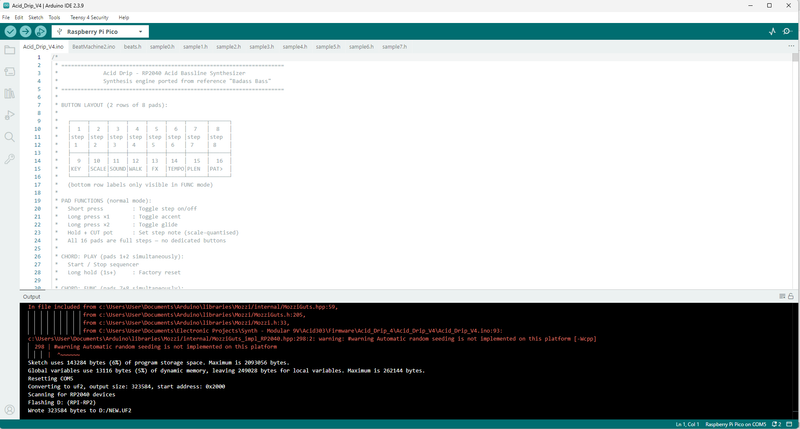

Have you ever heard a Roland TB-303 Bassline synth being played? Well if you're listened or danced to house, trance or techno music, then there is a good chance you have heard one before.
I decided I wanted to make my own (you can actually by a Behringer TD3-303 clone for relatively cheap - but why buy when you can make!) using a Raspberry Pi and a handful of components.
The original 303 uses a lot of passive and components like Op amps and matched pairs of transistors to build the classic filters and sound effects you hear. However, I'm a little too lazy these days to have to work with all those components and built the synth on a Raspberry Pi.
Unlike the original, Acid Drip is very easy to play - you can turn it on and start busting out grooves straight away. It has a heap of functions that are intuitive and easy to use (this took ages to get right and I'm still finessing parts of the code!!!), and it also has a sync in so you can connect it to other synths like a drum machine and play along.
I have used every GPIO on the Raspberry pi with the majority going to the 16 switches which are used to interact with the sequencer. As I couldn't add any other connections, I had to be a little canny with how the functions are activated and how the synth is started/stopped etc.
As I had a tonne of room still left on the Raspberry Pi, I decided to add a drum machine as well so you can add beats on top of the acid bassline. I won't go to much into this yet - I'll save the intro to the drum machine until the end of this 'Ible.
Well there is really no use talking about a musical thing - you need to hear it. Check out the vid so see it in action!
Here are a few online features on the Acid Drip
Noxalmusic
Hackster.io
Synthanatomy
Matrixsynth
Rackears


Parts
As usual, I have provided the parts list as a PDF which can be found as an attachment on this step. You can then easily print this off if needed or go to the links provided in the PDF and order the parts as required. You can also find the list in excel on my GitHub page
Getting the PCB & Front & Back Panel Printed
We all have different levels of knowledge, so when it comes to a build like this I want to make sure that I'm providing enough information so anyone with some basic soldering skills can make it. That includes ensuring there are instructions on how to get your own PCB's printed (which is super easy!)
So with that said, the first thing you will need to do is to get the front panel and PCB printed. I use JLCPCB (not affiliated) to get this done. The front panel is actually just a PCB without any components included! The front panel design is done in a program called Inkscape (available free) and the panel including the drilled holes is done in Fusion 360 (also free!)
The files that you need to send to JLCPCB can be found in my GitHub page. Download the repo to your computer.
STEPS:
Send the Gerber files (keep them zipped) to a PCB manufacturer like JLCPCB who will print the PCB and front panel for you.


I started with adding the Cherry MX switches. The reason being, I wanted to make sure that the board didn't have any other components whist soldering them into place so I could get them as straight as possible. Other components can get in the way etc. I found this worked well.
A NOTE ON THE PCB & FRONT PANEL
You may have noticed that your front panel and PCB and the ones int he images are different. That's because I made improvements to version 1 and you guys get the better option. The main change as, the drum machine added was an afterthought and I had to make some running changes to get a mix pot for the acid synth and drums along with a way to be able to add a sync in if required. Since I have used every single GPIO pin on the Raspberry Pi - it needed some clever code workarounds to get it to work.
STEPS:


Usually, I would be telling you to add the lowest profile components first which in this case would be the resistors. However, due to the cherry caps, we have left this until the 2nd step!
STEPS:


The screen is actually attached to the front panel and is connected to the PCB via some male header pins. this way, you can have a great fit to the front panel of the screen and easily remove the front panel if required.
STEPS:


There are a number of holes around the outside of the PCB that align to the front panel. These are used to add M2 spacers and screws to secure them together.
STEPS:


Follow the below to load the code up to the Raspberry Pi. I have provided a full step by step guide so anyone can do this.
Step 1: Install Arduino IDE
Download and install Arduino IDE 2.x from arduino.cc/en/software.
If you already have it installed, make sure it's version 2.0 or later - the older 1.x IDE can cause issues with the RP2040 core.
Step 2: Install the RP2040 Board Core
The Arduino IDE doesn't support RP2040 boards out of the box. You need to add the Earle Philhower RP2040 core.
2a. Open Arduino IDE. Go to File → Preferences (Windows/Linux) or Arduino IDE → Settings (macOS).
2b. Find the "Additional boards manager URLs" field and paste in this URL:
Click OK.
2c. Go to Tools → Board → Boards Manager.
2d. Search for RP2040 and install "Raspberry Pi Pico/RP2040" by Earle F. Philhower III. The install may take a minute — it downloads the full toolchain.
Step 3: Install Required Libraries
Step 4: Open the Sketch
4a. Create a new folder on your computer called Acid_Drip_V4.
4b. Place all sketch files into that folder:
4c. Double-click Acid_Drip_V4.ino to open it in Arduino IDE. The other files will automatically appear as tabs across the top of the editor.
Step 5: Select the Right Board and Settings
To select the board: Tools → Board → Raspberry Pi RP2040 Boards → Waveshare RP2040 Zero
If you're using a generic RP2040 board, choose Raspberry Pi Pico instead — the pin assignments may differ.
Step 6: Connect the RP2040 in Bootloader Mode
The RP2040 needs to be put into bootloader mode before the first upload (or after a crash).
6a. Hold down the BOOT button on the RP2040 board.
6b. While holding BOOT, plug the USB-C cable into the board and your computer.
6c. Release the BOOT button. The board will appear as a USB mass storage device called RPI-RP2 — like a USB flash drive appearing on your desktop.
6d. Back in Arduino IDE, go to Tools → Port and select the port that appeared. On Windows it will be a COM port (e.g. COM5). On macOS/Linux it will look like /dev/cu.usbmodem... or /dev/ttyACM0.
Step 7: Upload the Sketch
Click the Upload button (the right-facing arrow →) in the Arduino IDE toolbar, or press Ctrl+U (Windows/Linux) / Cmd+U (macOS).
The IDE will:
You'll see Done uploading. in the status bar when complete.
Step 8: Verify It's Working
After uploading:
Troubleshooting
"No port available" / board not detected Try a different USB cable - many USB-C cables are charge-only and won't work for data transfer.
Compile error about Mozzi Make sure you have Mozzi 2.0 or later. Version 1.x has a different API and will not compile with this sketch. Check via Sketch → Include Library → Manage Libraries and update if needed.
"Multiple libraries found for..." This is a warning, not an error - it's safe to ignore. If you have old copies of Adafruit libraries, you can remove duplicates from your Arduino libraries folder.
Board doesn't appear after entering bootloader mode Try a different USB port on your computer. Some front-panel USB ports on desktop PCs don't provide enough power.
Upload fails with "No device found on..." Re-enter bootloader mode (hold BOOT, reconnect USB) and try again.
Sketch compiles but display shows garbage or nothing Re-check SPI wiring. The ILI9341 display is sensitive to pin assignment - GP6/GP7/GP8/GP10/GP13 must match exactly.


We need to drive the Raspberry Pi with 5V's. A normal mobile phone of 18650 Li-Ion battery are 3.7V so we need a way to boost the voltage up to 5V. You can use a cheap module to do this quite easily. If you are going to use a mobile battery - then you can buy these from Ali Express or find them for free
STEPS:


I made a simple wooden case for my synth but if you are feeling frisky you could easily design and print a 3D one
STEPS:
Acid Drip has two modes — the Acid Synthesizer and the Beat Machine — which can run simultaneously and lock in sync. Switch between them at any time by pressing pads 9+10 together.
Getting Started
Press pads 1+2 together to start and stop the sequencer and drum machine. Holding down pads 1+2 together for 2 seconds will reset everything and you get back to the starting pattern.
The three pots shape the acid sound in real time — CUT controls the filter cutoff, RES controls resonance, and DCY controls how long each note rings out. These are your main performance controls and respond instantly while the sequencer is running.
Building a Bassline
The 16 pads represent the 16 steps of the sequencer. A short press toggles a step on or off.
A long press cycles through accent and glide — accent hits the step harder with more filter drive, glide slides the pitch into the next note.
To set the note for a step, hold the pad and turn the CUT pot — the note snaps to whatever scale you have selected.
FUNC Mode
Hold pads 7+8 to enter FUNC mode. The bottom row of pads each map to a function — KEY, RIFF, SOUND, WALK, FX, TEMPO, PLEN and PAT> — and the top row selects the value for whichever function is active.
Accent Edit
The accent sound itself — how much extra brightness and resonance an accented step gets, and how long that "squelch" rings out — is fully tunable.
Hold pads 15+16 together for 1 second to enter Accent Edit mode. While active, the three pots are repurposed:
Your normal CUT/RES/DCY settings are frozen while you're in this mode, so the bassline's base tone won't change while you tune — only accented steps will sound different as you turn the pots.
Play a pattern with some accented steps active so you can hear the changes as you make them. Hold pads 15+16 again for 1 second to exit — your settings are automatically saved and will still be there next time you power on, until you go back in and change them again.
Saving and Loading
Saving — hold pads 7+8, and hold down either pads 3, 4, 5 or 6 for 1 second to save. Loading — hold pads 7+8, and tap either pads 3, 4, 5 or 6 to load one of the four patch slots. The four dots in the top of the screen show which slots have something saved (yellow = saved, grey = empty).
The Beat Machine
I made this as easy as possible to use! Choose from 16 built-in patterns using the pad grid — everything from straight 4/4 and four-on-the-floor house to breakbeats, latin, drum and bass and more. Each pattern is a complete arrangement across all 8 drum tracks and gives you a solid foundation to work from straight away. There are 8 drum instruments — kick, hi-hat, snare, rim, tom, bass, clap and open hat — playing across a 32-step grid (2 bars of 16th notes). Short-tap any pad to load that pattern instantly.
For individual drum sounds, hold any of the first five drum pads (kick through tom) while turning the pots to adjust that drum's pitch, decay length and volume independently. The pitch knob is exponential — centre is natural speed, and every quarter turn is roughly one octave. These settings save with your patch slots.
Beat Machine FUNC Mode
Hold pads 7+8 to enter FUNC mode on the Beat Machine. The bottom row maps to 8 functions and the top row selects the value.
The Fill Engine
Fills are fully automatic once you set the frequency and type. The density accelerates into the landing so it feels like it's rushing into the "1" rather than just stopping.
HATS builds a closed-hat pattern that opens up on the last couple of steps, with a half-time kick anchoring the floor.
CLAP stacks claps over a steady half-time kick.
SNARE runs a snare rush with no kick underneath — the silence makes the landing hit harder.
KIT does a descending tom roll for about 70% of the window, then switches to snare hits, and adds a clap on the landing beat for a full house-style drop.
While the FILL slot is selected in FUNC mode, the three pots let you dial in the fill voice's own pitch, decay and volume independently of the main drum sounds — useful for making the fill snare or hat sound slightly different from the pattern version.
If the acid synth is playing when you switch to drum mode, you will hear both playing together — this is intentional so you never lose the groove when switching views.
Sync In
If you want to slave Acid Drip to an external clock, flip the SPDT switch to the SYNC position and hold pad 14 while powering on. The device will boot into Sync In mode — a quick "SYNC IN ACTIVE" message confirms it — and the sequencer will follow pulses arriving on GP2 rather than its internal clock.
Easter Egg
Hold down pads 11, 12, 13 and 14 for 1 second to enter a secret pattern mode with classic acid house and synth patterns pre-loaded. You can still use all the FUNC controls and add drums on top. Hold the same four pads again for 1 second to exit. You may also want to reset using pads 1+2 after exiting to clear the pattern.